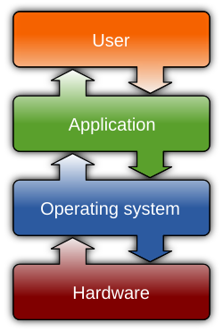
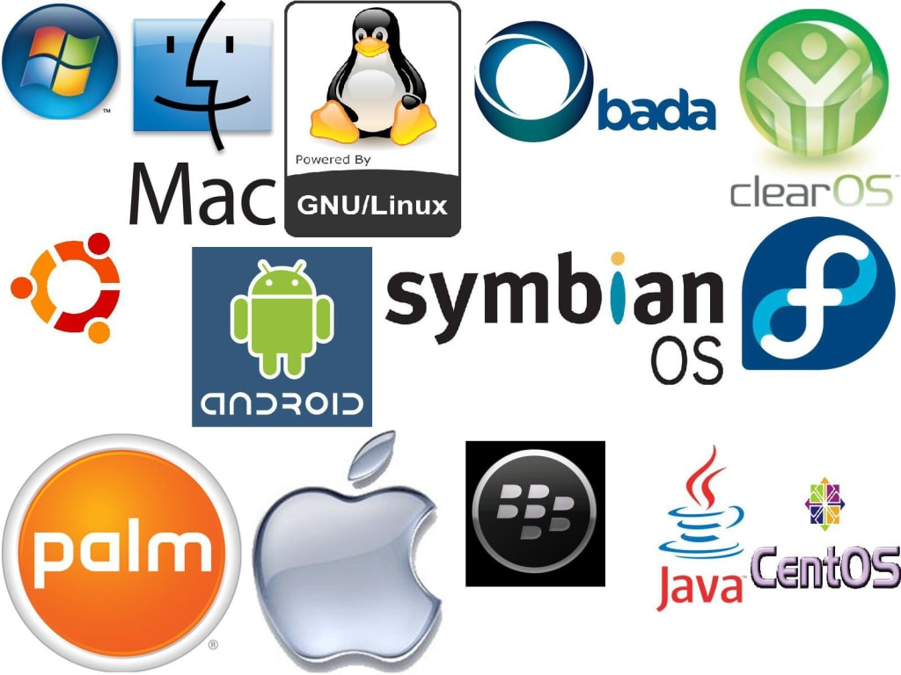

Introduction to Operating Systems
What is an Operating System?
An Operating System (OS) is system software that acts as an intermediary between users, applications, and the computer hardware. It manages hardware resources — such as CPU, memory, and input/output devices — and provides essential services to applications to make using a computer easier.[1]
Goals of an Operating System
- Convenience: Provide a user-friendly environment that hides the complexities of hardware.[2]
- Efficiency: Optimize the use of system resources (CPU, memory, storage).[2]
- Fairness: Ensure all processes get a fair share of resources.[2]
- Protection & Security: Prevent unauthorized access and secure data.[2]
- Abstraction: Provide a simple interface to interact with complex hardware.[1]
Functions of an Operating System
The OS performs many core functions to achieve these goals:[2]
- Process Management: Creating, scheduling, and terminating processes; inter-process communication.
- Memory Management: Allocating/freeing memory, paging, virtual memory.
- File System Management: File organization, permissions, retrieval.
- Device / I/O Management: Device drivers, buffering, interrupts.
- Security & Access Control: Authentication, permissions, data protection.
- Error Detection & Handling: Error logs, diagnostics, recovery.
- Resource Allocation: Distributing CPU, memory, I/O among processes.
- User Interface: CLI, GUI, system calls for developers.
Why is the Operating System Important?
Without an OS, each application would have to manage CPU, memory, storage, and I/O devices on its own — which would be inefficient and error-prone. The OS ensures stability, security, and efficiency in modern computing.[1][2]
References
- “Operating System,” Wikipedia
- “Functions of Operating System,” GeeksforGeeks